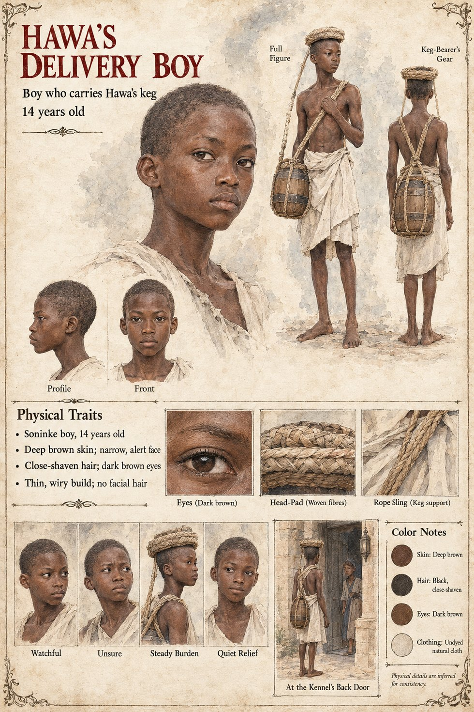

Hawa's Delivery Boy
Carries Hawa's Uncounted Day keg to the palace kennel · unnamed · 14 years old on his sheet
One clause in Chapter Fourteen. Hawa has sent a keg of her darkest brew up to the kennel yard on every Uncounted Day since the year the brew was named, and the keg has to be carried; on the twenty-eighth of Mavren Sira had made the delivery boy's acquaintance at the back door of the Weighmaster's Table, where the keg stood waiting. She did not hurt him. She had no need. She doses the keg instead, with a compound she uses on guards, so as not to have to deal with witnesses, in an amount calculated for the lightest man likely to drink from it, who is a lean man of sixty-one. The manuscript does not say whether he ever learns what he carried, and gives him no age, name, face or later appearance.
The manuscript gives the boy, the keg and the meeting; everything visible is invented, as the sheet itself notes at its foot. Its age of 14, thin wiry build of about 5 ft 1 in (155 cm), narrow alert face, close-shaven hair, dark brown eyes, deep brown skin, short undyed wrapper, woven head-pad and rope sling are its own, as are its panels Watchful, Unsure, Steady Burden and Quiet Relief. Its scene, At the Kennel's Back Door, sets him at the kennel; the manuscript's one meeting for him is at the back door of the Weighmaster's Table.
“She did not hurt him.”